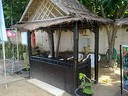

Resor · 2010-11-14 @ 13:17:20 Allmänt Permalink
Vardag
Skickad till sjukhus i Phuket
4,5 timmars resa (220 THB), enkel. Jag hittade platsen minibussarna går ifrån och köpte biljett. Det var inte helt lätt för personalen var av den sorten som inte vill prata. Planen var att ta den första bussen, hinna vara på sjukhuset och sen ta sista bussen hem igen 15.30.
Bussresan var ok, lite små säten och inträngd, men ok. När jag landade på busstorget i Phuket, visade det sig att det finns TVÅ sjukhus. "Bangkok Phuket" och "Phuket International"
I samråd med en snäll tant på busstorget valde jag det förstnämnda.
Hon säger att jag ska ta en mc-taxi om jag har bråttom. Hjälm på, typ för liten ridhjälm. Och en liten tanig man i 70-årsåldern kör mig. Perfekt, smidigt, snabbt, schysst och rätt sjukhus! :-)
Väl inne blir jag så väl omhändertagen! Allt är fräscht, någon följer mig hela tiden. Leder mig snabbt till registrering, till prov, till doktorn till fler prov, ultraljud och tillbaka till läkaren. Flyt!
Och alla tog sig tid, var trevliga och proffsiga. Diagnos, medicin och klart! För 1.200 kr
(Glatt berättar dom att jag dessutom har njursten, men det kan dröja innan det märks)
Hit kan man ju åka om man är sjuk! Nu förstår jag att många gör det, ögonoperationer, tandvård och operationer som är väntetid på hemma.
Tar en annan mc-taxi, där stördämparna går i botten och farthindren är …en påminnelse om jordbruksmaskiner på stålhjul utan fjädring.
Med 20 min till godo kommer jag till bussen, och åker hem igen!
---
Så sakteliga börjar jag jobba igen i butiken, det är kul! Vill ju dyka men det här läker långsamt. Jag har inte någon tidigare säljerfarenhet, men att sälja en bra produkt till någon som vill ha den är roligt!
Det är dock mycket småregler att lära. "Den grejjen kostar si om så fast inte om man köpte den också fast då blir det såhär…"
Att vara sjuk har tagit ner kroppens rörlighet, för det har gjort/gör ont. Jag rör mig segt vilket är frustrerande.
Jag är ju ingen nattsuddare i hög volym, så jag hänger inte med på nattrundorna. Men jag gör en del egna små förankringar. "Black Pearl" Har god mat! Lite för dyrt för vardags men dessutom en helgo servitris som blir glad när jag kommer, sånt gillar jag. …hon som trodde jag var pappa till snorkelguiderna…
Och grannhotellets souvenirbutik drivs av en som kan engelska bra, så jag stannar till där ibland och ställer mina thaifrågor, och lämnar tvätt (30 THB/kg) och idag köpte jag en liten glad munkfigur.
Jo, i förrgår var det Krabi och hämta arbetstillstånd! Nu är jag på riktigt :-)
(hittade god "parma" också).
4,5 timmars resa (220 THB), enkel. Jag hittade platsen minibussarna går ifrån och köpte biljett. Det var inte helt lätt för personalen var av den sorten som inte vill prata. Planen var att ta den första bussen, hinna vara på sjukhuset och sen ta sista bussen hem igen 15.30.
Bussresan var ok, lite små säten och inträngd, men ok. När jag landade på busstorget i Phuket, visade det sig att det finns TVÅ sjukhus. "Bangkok Phuket" och "Phuket International"
I samråd med en snäll tant på busstorget valde jag det förstnämnda.
Hon säger att jag ska ta en mc-taxi om jag har bråttom. Hjälm på, typ för liten ridhjälm. Och en liten tanig man i 70-årsåldern kör mig. Perfekt, smidigt, snabbt, schysst och rätt sjukhus! :-)
Väl inne blir jag så väl omhändertagen! Allt är fräscht, någon följer mig hela tiden. Leder mig snabbt till registrering, till prov, till doktorn till fler prov, ultraljud och tillbaka till läkaren. Flyt!
Och alla tog sig tid, var trevliga och proffsiga. Diagnos, medicin och klart! För 1.200 kr
(Glatt berättar dom att jag dessutom har njursten, men det kan dröja innan det märks)
Hit kan man ju åka om man är sjuk! Nu förstår jag att många gör det, ögonoperationer, tandvård och operationer som är väntetid på hemma.
Tar en annan mc-taxi, där stördämparna går i botten och farthindren är …en påminnelse om jordbruksmaskiner på stålhjul utan fjädring.
Med 20 min till godo kommer jag till bussen, och åker hem igen!
---
Så sakteliga börjar jag jobba igen i butiken, det är kul! Vill ju dyka men det här läker långsamt. Jag har inte någon tidigare säljerfarenhet, men att sälja en bra produkt till någon som vill ha den är roligt!
Det är dock mycket småregler att lära. "Den grejjen kostar si om så fast inte om man köpte den också fast då blir det såhär…"
Att vara sjuk har tagit ner kroppens rörlighet, för det har gjort/gör ont. Jag rör mig segt vilket är frustrerande.


Vi var och tittade på en plats vi hyr på resort "Cha-da" där en av oss skall stå och ge info och göra pooldyk. Verkar kul!Jag är ju ingen nattsuddare i hög volym, så jag hänger inte med på nattrundorna. Men jag gör en del egna små förankringar. "Black Pearl" Har god mat! Lite för dyrt för vardags men dessutom en helgo servitris som blir glad när jag kommer, sånt gillar jag. …hon som trodde jag var pappa till snorkelguiderna…
Och grannhotellets souvenirbutik drivs av en som kan engelska bra, så jag stannar till där ibland och ställer mina thaifrågor, och lämnar tvätt (30 THB/kg) och idag köpte jag en liten glad munkfigur.
Jo, i förrgår var det Krabi och hämta arbetstillstånd! Nu är jag på riktigt :-)
(hittade god "parma" också).